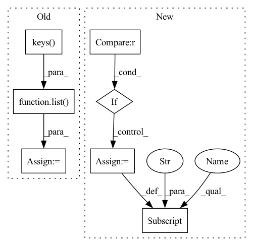

Pattern ID :26339
Before Change
compressed_st = {"state_dict": {}}
layers = list( st["state_dict"].keys())
print("getting compression")
for name in layers:
// print(each)After Change
compressed_st = {compressed_key: {}}
pretrained_st = StableDiffusionPipeline.from_pretrained(ckpt, torch_dtype=torch.float16).to("cuda")
pretrained_st = pretrained_st.unet.state_dict()
if "modifier_token" in st :
compressed_st["modifier_token"] = st["modifier_token"]
st = st["unet"]
print("getting compression")In pattern: SUPERPATTERN
Frequency: 3
Non-data size: 7
Instances Fragment ID: 79088509
Project Name: adobe-research/custom-diffusion
Commit Name: 5cd1e9c869b793d88573533a6a2adccd10aadcd0
Time: 2023-01-05
Author: nupurkumari@Nupurs-MacBook-Pro.local
File Name: src/compress.py
M Class Name: AnonimousClass
N Class Name: AnonimousClass
M Method Name: compress(5)
N Method Name: compress(4)
M Parent Class:
N Parent Class:
M File Name: src/compress.py
N File Name: src/compress.py
M Start Line: 10
M End Line: 48
N Start Line: 8
N End Line: 48
Before Change
//// Regressors
if regressor_config is not None:
self.regressor_names = sorted(list( regressor_config.keys()) )
self.regressor_params = new_param(dims=[len(regressor_config.keys())])
else:
self.regressor_names = NoneAfter Change
//// Regressors
self.regressors_dims = regressors_dims
if self.regressors_dims is not None :
self.regressor_params = nn.ParameterDict({})
n_additive_regressor_params = 0
n_multiplicative_regressor_params = 0
for configs in self.regressors_dims.values():
if configs["mode"] == "additive":
n_additive_regressor_params += 1
else:
n_multiplicative_regressor_params += 1
self.regressor_params["additive"] = new_param(dims=[n_additive_regressor_params])
self.regressor_params["multiplicative"] = new_param(dims=[n_multiplicative_regressor_params])
else:
self.regressor_params = None Fragment ID: 79088506
Project Name: ourownstory/neural_prophet
Commit Name: 71ff07c9baa8002f2611b7f6d3f8f94825e59b1b
Time: 2020-09-14
Author: hansika.hewamalage@monash.edu
File Name: neuralprophet/time_net.py
M Class Name: TimeNet
N Class Name: TimeNet
M Method Name: __init__(12)
N Method Name: __init__(12)
M Parent Class: nn.Module
N Parent Class: nn.Module
M File Name: neuralprophet/time_net.py
N File Name: neuralprophet/time_net.py
M Start Line: 162
M End Line: 170
N Start Line: 162
N End Line: 179
Before Change
if bounds is not None:
n = len(list( bounds.keys()) )
for i, v in enumerate(bounds.values()):
fig.axes[i, i].axvline(v[0], ls=":", alpha=0.5, color="k")
fig.axes[i, i].axvline(v[1], ls=":", alpha=0.5, color="k")After Change
pairplot_kwargs.update(kwargs)
df = pd.DataFrame(live_points)
if c is not None :
df["c"] = c
fig = sns.pairplot(df, hue="c", diag_kind=None, **pairplot_kwargs)
else:
fig = sns.pairplot(df, **pairplot_kwargs) Fragment ID: 79088507
Project Name: mj-will/nessai
Commit Name: 4dc55253626f5e597467ab6e09aeaa9cf8a76df3
Time: 2020-07-14
Author: m.williams.4@research.gla.ac.uk
File Name: flowproposal/plot.py
M Class Name: AnonimousClass
N Class Name: AnonimousClass
M Method Name: plot_live_points(4)
N Method Name: plot_live_points(3)
M Parent Class:
N Parent Class:
M File Name: flowproposal/plot.py
N File Name: flowproposal/plot.py
M Start Line: 20
M End Line: 24
N Start Line: 13
N End Line: 26